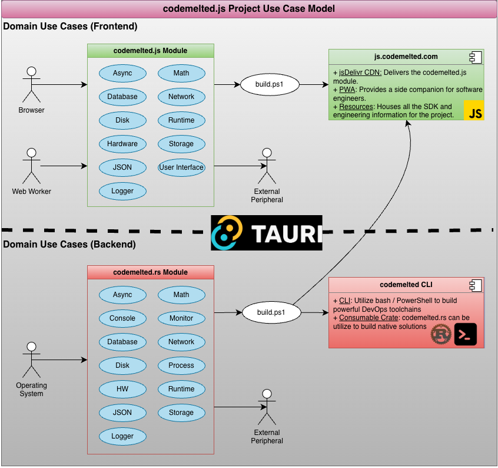

Domain Use Cases

| UC | Link | Description |
|---|---|---|
| 00 | Module Core | Defines the reusable objects / API violation rules that apply to the entire module and not just a specific use case. |
| 01 | Async | Complex applications require the ability to asynchronously time slice up work as to not block the main synchronous processing thread. |
| 02 | Console | Command Line Interface (CLI) apps sometimes require basic input / output interaction with a user. Basic prompts working over STDIN / STDOUT / STDERR provides this capability. |
| 03 | Crypto | Apps needs to secure information from unauthorized usage. Cryptographic algorithms allow for hiding or coding information so that only authorized parties can read and process it. |
| 04 | Database | Complicated data requires a way to be stored, recalled, and utilized. Embedded database technologies (IndexedDB codemelted.js / SQLite3 codemelted.rs) allow for this complex data storage. |
| 05 | Disk | Applications have to interact with files on disk. That means reading and writing to them along with managing them. |
| 06 | Hardware | Hardware peripherals are auxiliary devices connected to a computer to expand its capabilities. Applications connect to these peripherals via protocols specific to that hardware. |
| 07 | JSON | JSON (JavaScript Object Notation) is a lightweight, plain-text format used to store and transfer structured data between a server and an application. |
| 08 | Logger | A utility that automatically records, tracks, and stores sequential data, system events, or user actions over time. |
| 09 | Math | A collection of mathematical formulas for computational purposes. |
| 10 | Monitor | An ability to measure aspects of the host computer / operating system of a developed application is key in identifying metrics that can point to issues with the host system. |
| 11 | Network | A system of interconnected computing devices that communicate and share resources, data, and applications over wired or wireless connections. |
| 12 | Process | An instance of a computer program that is actively being executed by the operating system and the CPU. Bidirectional communication occurs via STDIN / STDOUT / STDERR. |
| 13 | Runtime | The supporting software, libraries, and virtual layer that sit between the app and the operating system to make the program run. |
| 14 | Storage | A string based key / value pair combination for simple information storage and retrieval. |
| 15 | User Interface | A visual way for humans to interact with electronic devices, such as computers, smartphones, and ATMs, using graphics instead of text commands. |